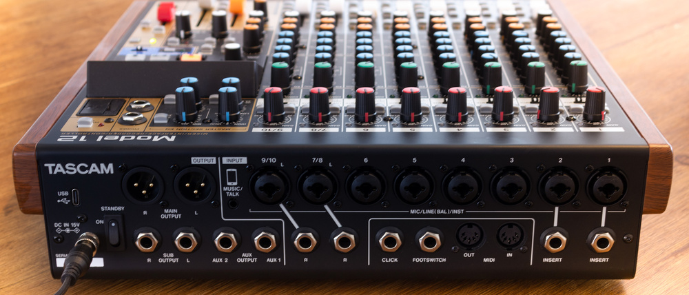
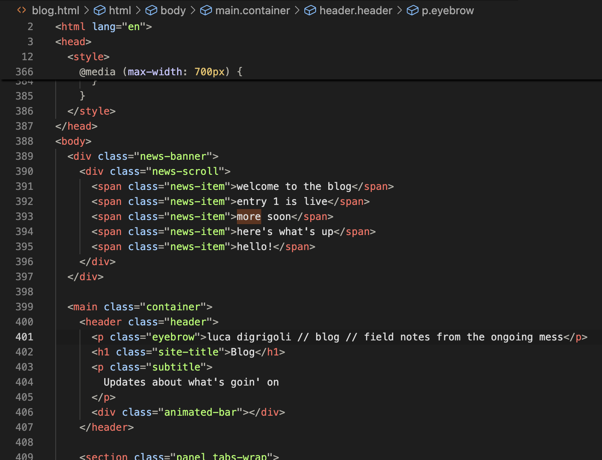

Q&A feat. questions asked by nobody
This could have been an email.
Why is the album taking so long? Didn’t you announce this like forever ago
yeah, I did, and I'm sorry it's taking so long! I'm doing a metric ton or two of work on my end to try and learn how to produce myself. Add on top of that the want for everything to be perfect, and you get a lot less done than you'd hope after a recording session. I also had announced the album right before starting my new day job, so my weeks have been a little more than full while I adjust. It's been a ~3 months on the job, so I'm def getting used to it, which means more momentum lately!

Day job?
I know.
It's not my supreme desire to be doing anything other than music, but I do need to be doing something else while I cross my fingers that the music will take. Plus, it's validating to be working in what I went to school for. I do SWE (i.e. 'coding') for a tech startup and web design for a few clients. With that being said, the startup is a team of 4 so things are happening at all hours, even outside of what's supposedly a 9-5. Again, don't love cutting into time/energy that could be used for music, but needed nonetheless. I will find the balance, until I don't have to find the balance, but I'm handling one thing at a time and making no assumptions lol
Plus, I have a private office now, and that's pretty neat...

Stop making questions up, do an actual Q&A.
I mean okay, if you insist. Realistically anybody reading this right now probably knows me personally enough that they can access me thru DM or something, but this is fun and so if I get a few Q&A-esque questions I'll roll with them and do this again. shoot me an email!
What even is this album?
It's about being me in a very strange time to be me. Some are hopeful, others are panicked, it keeps CHANGING! That's the other thing about doing a project that starts to get this long, it keeps changing. I know at some point I have to call it finished and work with what I've got, and I will.
What if I want to help?
Oh, wow. That's actually huge.
If that's the case, listen to it when it drops. Please please please send it to a friend. Or just tell me if you heard something you like.
In the meantime, please do continue to listen to my stuff that is out. That makes such a big impact